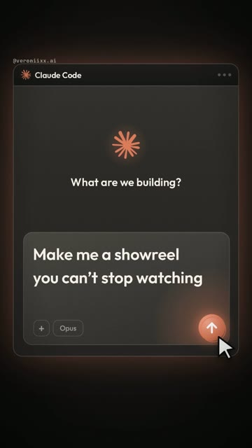
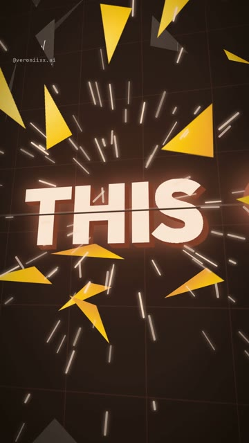
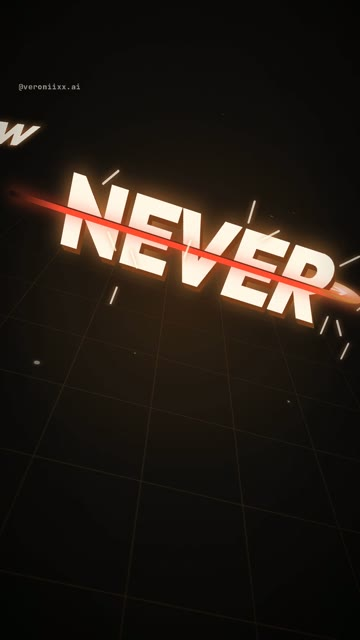

Монтаж
в такт.
Кодом.
Как я собрала 18-секундный шоурил под музыкальный трек в Claude Code: стрелка пролетает сквозь слова, окно разлетается на дропе, камера гонится за ней. От установки до готового mp4. Windows и Mac.





Что ты получишь
Вертикальный ролик 1080×1920, где каждое движение попадает в удар твоего трека. Ты описываешь словами, что хочешь. Claude пишет код, измеряет музыку, рендерит кадры и собирает файл.
Что нужно
- Компьютер с Windows 10/11 или macOS.
- Тариф Claude, в который входит Claude Code.
- Музыкальный трек, который тебе можно использовать. Про музыку есть заметка ниже.
Три правила, которые сработали
Зачем измерять удары
Модель не слышит твой трек. Если сказать «поставь взрыв на дроп», она будет угадывать. Попроси её измерить звук: громкие всплески в нижней полосе это удары баса, резкие всплески в верхней это хлопки, участок тише −60 дБ это тишина. В моём треке тишина длилась 0,75 секунды, а дроп возвращался на кадре 189. Всё остальное держится на таких числах.
Зачем один герой
Склейка без причины выглядит как ошибка. Склейка, которую вызвало что-то в кадре, выглядит как фокус. Стрелка печатает промпт, становится кнопкой, её нажимают, она разбивает окно, летит сквозь слова и в конце возвращается на кнопку.
В середине меньше значит лучше
В моей четвёртой версии были шлейфы, летающие осколки, лишние предметы вокруг каждого слова. Получился перебор. Помогло убирать, пока не остались только стрелка и слово.
Ставим инструменты
1Открой терминал
Windows Нажми Win, набери PowerShell, открой.
Mac Нажми Cmd + Пробел, набери Terminal, открой.
2Node.js, Git, Python и ffmpeg
Windows Вставляй по одной строке. На вопросы отвечай Y.
winget install -e --id OpenJS.NodeJS.LTS winget install -e --id Git.Git winget install -e --id Python.Python.3.13 winget install -e --id Gyan.FFmpeg
Mac Сначала Homebrew, он спросит пароль от компьютера. В конце он напечатает две строки под «Next steps»: выполни их, потом вторую команду.
/bin/bash -c "$(curl -fsSL https://raw.githubusercontent.com/Homebrew/install/HEAD/install.sh)"
brew install node git python ffmpeg
3Claude Code
npm install -g @anthropic-ai/claude-code
Удобнее приложение, чем терминал? Поставь Claude с claude.ai/download, в нём есть вкладка Code, которая делает то же самое.
Папка и первые промпты
1Создай папку и запусти Claude
mkdir showreel cd showreel claude
2Подготовка
Подготовь в этой папке проект для моушн-графики. 1. Установи Remotion (React 18 + TypeScript). 2. Проверь, что в Python есть numpy и scipy. Чего не хватает, установи. 3. Проверь, что ffmpeg запускается из терминала. 4. Собери тестовую композицию 1080x1920, 30 кадров в секунду: одна карточка с 3D-поворотом и одна строка текста. Отрендери один кадр в PNG и покажи путь к файлу. Если чего-то не хватает, установи сам и скажи, что установил. Если что-то падает, не останавливайся: найди причину и почини.
3Измерь свой трек
Положи mp3 в папку и отправь это. То, что в квадратных скобках, замени на своё.
Я положила музыкальный трек сюда: [путь/к/треку.mp3]. Хочу ролик, смонтированный под него: с [6]-й секунды трека, длиной [18] секунд. Прежде чем что-то придумывать, измерь трек в Python (numpy + scipy, декодируй через ffmpeg): 1. Темп в BPM и длину одной доли в кадрах при 30 кадрах в секунду. 2. Каждый удар баса: полосовой фильтр 35-140 Гц, найди начала ударов, дай номера кадров. 3. Каждый хлопок или малый барабан: полосовой фильтр 2500-9000 Гц, то же самое. 4. Любую тишину длиннее 0,3 секунды и точный кадр, на котором звук возвращается. 5. Громкость нижней полосы по кадрам, чтобы картинка могла пульсировать вместе с басом. Сохрани всё в beats.json и выведи короткую таблицу. Ни один тайминг не угадывай на слух: каждое событие в ролике будет стоять на этих номерах кадров.
Бриф ролика
То, что в квадратных скобках, замени на свои слова, цвета и ник. Остальное можно оставить. Слова в кадре у меня английские, свои пиши на любом языке.
Собери шоурил, смонтированный под мой трек. 18 секунд, 540 кадров, 30 кадров в секунду, 1080x1920, H.264 CRF 18, yuv420p. Весь текст в кадре на [английском]. Для каждого события бери номера кадров из beats.json. ИДЕЯ Я печатаю промпт в [Claude Code], нажимаю «отправить», и промпт превращается в фильм. ОДИН ГЕРОЙ Стрелка с кнопки отправки. Она есть в каждой части и вызывает каждый переход. ЧАСТИ 1. ВНУТРИ ПРОМПТА (от начала до последнего удара баса перед тишиной). Камера внутри поля ввода, сверхкрупный план, наклон в 3D. На каждый удар баса стрелка пролетает сквозь следующее слово фразы "[Make me a showreel you can't stop watching]". 2. РАСКРЫТИЕ (тишина в треке). Камера отъезжает до конца: всё это время это было окно [Claude Code]. Стрелка встаёт на место кнопки отправки. Курсор мыши подлетает по дуге и нажимает её на последнем кадре тишины. 3. РАЗЛОМ (дроп). Окно разлетается примерно на 70 треугольных осколков, они летят от кнопки в 3D, кнопка ломается на клинья, искры, одна ударная волна. Стрелка вылетает из неё. 4. ПОГОНЯ (от дропа до последнего хлопка второго такта). Тёмное тёплое пространство. Стрелка летит по траектории и на каждый хлопок пробивает одно огромное слово: [THIS / REEL / WAS / NEVER / EDITED / NO CAMERA / NO TIMELINE / NO KEYFRAMES / JUST / CODE]. Слова стоят под разными углами, некоторые вертикально. Камера гонится за стрелкой и поворачивается под каждое слово. Каждое слово отвечает на удар своим движением: одно крутится, одно опрокидывается, одно зачёркивается красным, одно режется на полосы, одно переворачивается, одно падает плашмя, одно подпрыгивает, последнее перебирает символы кода и собирается. Свет по пути теплеет от глиняного к золотому. Один яркий кадр на каждый хлопок. 5. КАРУСЕЛЬ (третий такт). Слово [CODE] стоит на месте. Вокруг него в настоящей 3D-глубине летают карточки, проходя перед ним и за ним. Фон меняется четыре раза в секунду. 6. ОТВЕТ (до конца). Осколки летят обратно и собирают окно: взрыв, проигранный задом наперёд. Ассистент отвечает "[Done.]". ПРАВИЛА ДЛЯ ТЕКСТА На тексте никакого размытия и тряски. Слово должно быть целым и читаемым хотя бы треть секунды. Ни одна буква не обрезается краем кадра: длинные слова уменьшай. Единственный мелкий текст это "[@мой_ник]" сверху. ВИД Тёмный тёплый фон, кремовый шрифт, один акцентный цвет [#D97757]. Свет, свечение и градиенты вместо плоских заливок. Поверх всего плёночное зерно и мягкая виньетка. РЕЗКОСТЬ Текст, на который наезжает камера, рисуй в пять раз крупнее и уменьшай масштабом. Иначе браузер растягивает маленькую картинку, и буквы выходят зубчатыми. ПОРЯДОК РАБОТЫ 1. Создай файлы. Проверка типов должна проходить. 2. Отрендери около 50 ключевых кадров в один контактный лист и посмотри на него сам. 3. Сам проверь каждую часть и каждый стык: обрезанные буквы, текст за кадром, чёрные кадры, нечитаемые слова. Исправь и отрендери заново. 4. Отрендери финальный mp4 с треком и копию без звука. 5. Проверь готовый файл: длительность, число кадров, и вырежи два крупных кадра в полный размер, чтобы проверить резкость. 6. Напиши мне одним сообщением: путь к файлу, размер, что ты проверил и что проверить не смог. Не останавливайся, пока не будет готового mp4.
Как доводить замечаниями
Первый рендер никогда не бывает финальным. Посмотри его и скажи, что не так. Это близко к тому, что отправляла я:
Первая часть не динамичная, не в такт и тянется. Пусть стрелка пролетает сквозь слова как пульс, а камера идёт за ней.
Разлом на клике недостаточно эпичный, и не видно, как ломается кнопка. Разбей всё окно на куски от кнопки.
Плоский жёлтый выглядит дёшево. Сохрани вид первой части: тёмный, тёплый, свет и свечение вместо заливок.
Середине нужна идея, а не ещё эффекты. Пусть каждое слово отвечает на удар по-своему.
Слишком много всего сразу. Убери шлейф и летающие фигуры. Только стрелка и слова, которые крутятся или падают. Вспышки оставь.
Некоторые слова не читаются: они быстрые и разрезаны пополам. Каждое слово должно быть целым хотя бы треть секунды.
Что у меня ломалось
- Мутные крупные планы. Когда камера наезжала на мелкий текст, буквы выходили зубчатыми: браузер растягивал маленькую картинку. Решение есть в брифе: рисовать такой текст в пять раз крупнее и уменьшать.
- Тёмная полоса через каждое слово. Две половины разрезанного слова не сходились на 30 пикселей. Это пережило четыре версии, потому что выглядело как задумка. Вырежи кадр в полный размер и посмотри.
- Чёрные кадры в сценах с шейдерами. Тяжёлые шейдеры не успевали, и рендер терял 3D. Помог рендер этих сцен в половинном разрешении.
- Claude не слышит звук и не видит движение. Он проверяет отдельные кадры и числа. Как ролик ощущается под музыку, оцениваешь ты, так что будет несколько раундов.
- Медленный рендер. Десять-пятнадцать минут на 18 секунд бывает. Это нормально.
Про музыку
Если твой трек это коммерческая песня, не вшивай его в файл, который публикуешь. Площадка может отключить звук или урезать охват. Собери ролик под трек, выгрузи копию без звука и добавь тот же трек из музыкальной библиотеки самой площадки с той же секунды. Если трек твой или с лицензией, вшивай.
Частые вопросы
У меня получится такой же ролик?
Похожий по структуре, но не кадр в кадр: Claude каждый раз пишет код с нуля. Поменяй слова, цвета и трек, чтобы ролик стал твоим.
В терминале красная ошибка. Что делать?
Скопируй её и вставь Claude со словами «вот ошибка, исправь и продолжай».
Нужны ли 3D-карусель и шейдеры?
Нет. Убери из брифа часть 5 и переходи от погони сразу к ответу. Первые две трети это обычная веб-вёрстка в 3D, она рендерится на чём угодно.